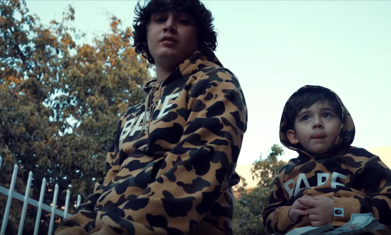
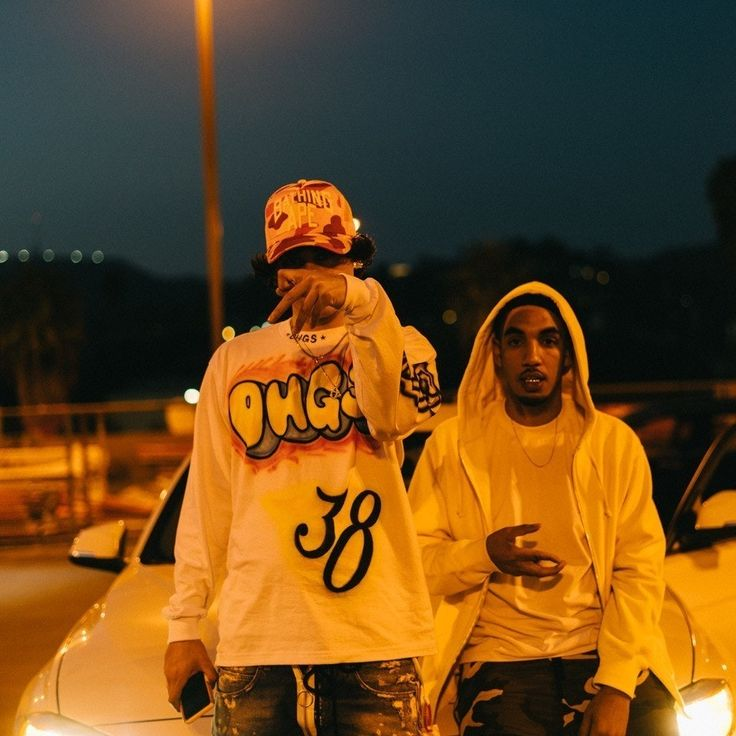
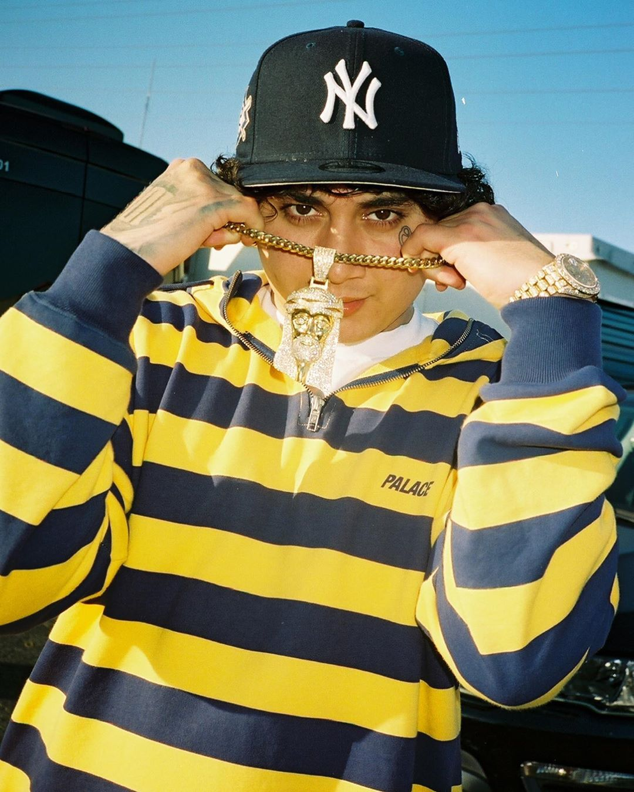
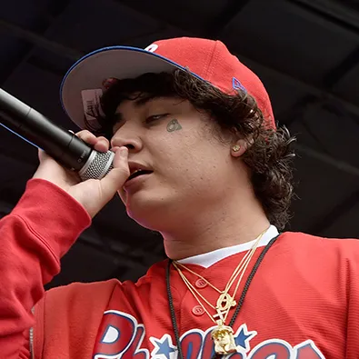
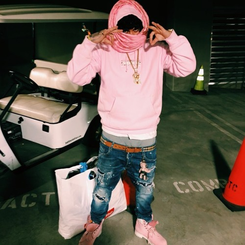
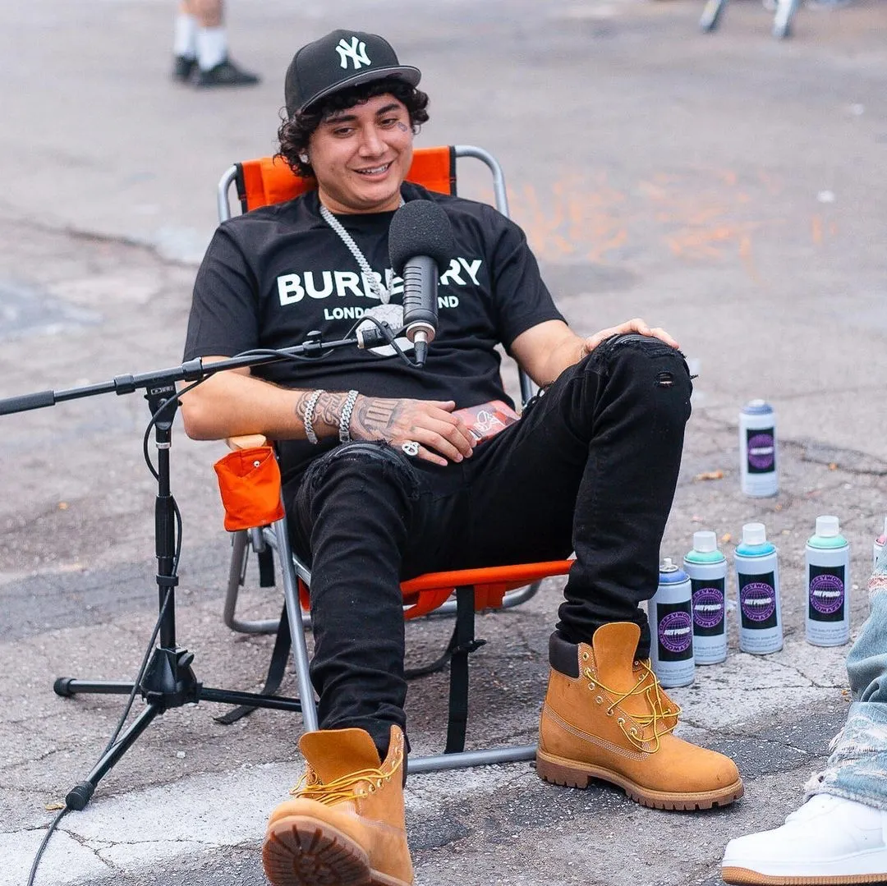
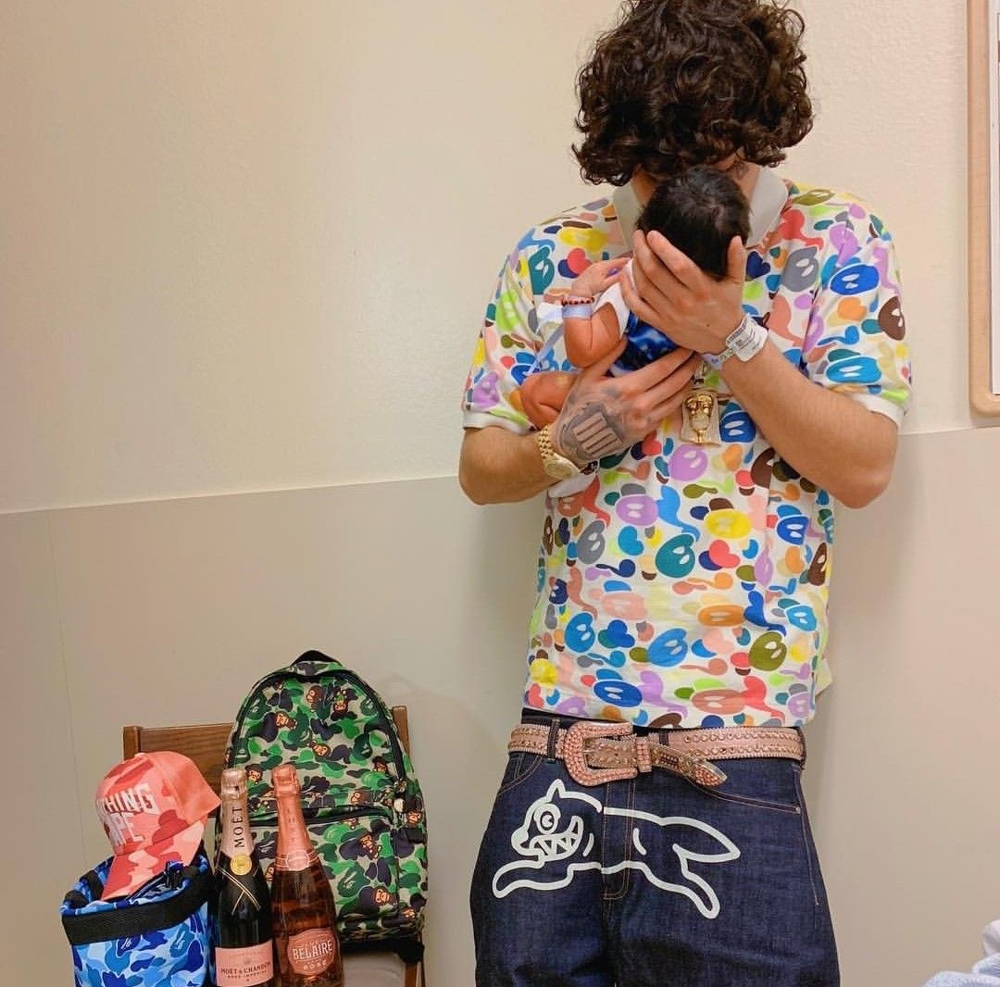
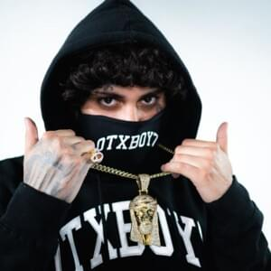
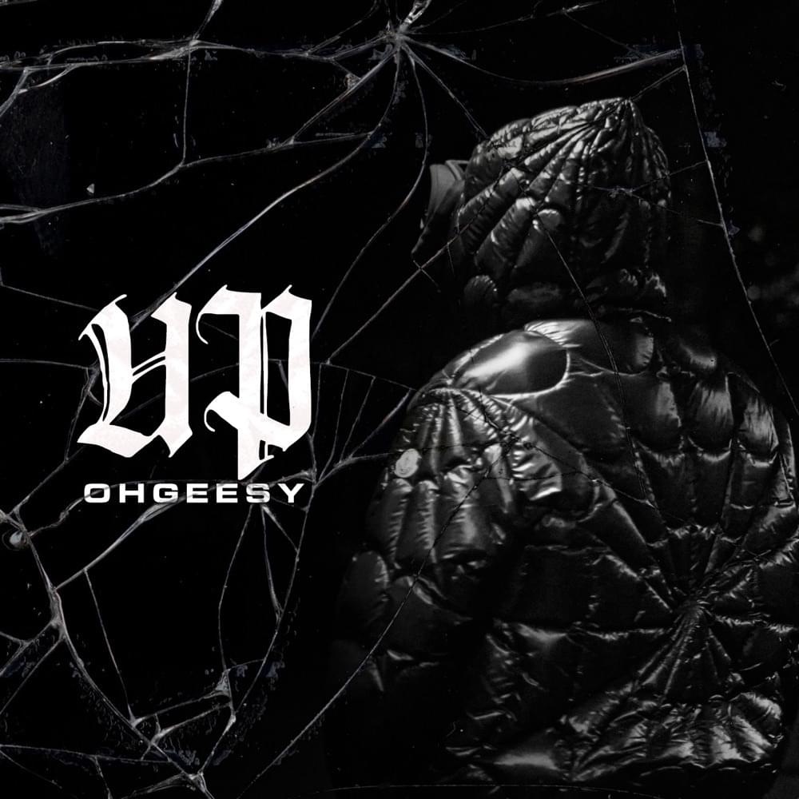

OHGEESY: A Fashion Icon

Bape Sweater
- Seeing Ohgeesy in a music video with this Bape sweater was what made me passionate about clothes and dressing well.

Graffiti Shirt
- Ohgeesy is a graffiti artist and made a custom graffiti shirt for his music video "Bottle Service." Ohgeesy is not just a rapper but a true artist.

Jesus Piece
- The Jesus Piece is a popular hip-hop pendant and Ohgeesy loves jewelry as well as clothes. His Jesus Pieces have grown in size throughout his career.

Sports Teams
- Ohgeesy frequently wears fitted caps with different sports teams to match every outfit whether he is a big fan of the team or not.

Pink Clothes
- People sometimes joke that "Real men can wear pink." Well Ohgeesy has always found ways to make pink look cool with his different outfits.

Rockin' Timbs
- Ohgeesy has always taken his fashion sense from many different regions of the country. Timberland boots were popularized in New York originally.

Fresh for His Son
- It only makes sense that Ohgeesy wore a festive looking Bape shirt for the birth of his son, being that it is his favorite clothing brand.

OTX Boyz
- "OTX Boyz" is Ohgeesy's original clothing line. He designs the clothes himself and his mother, who he is very close with, operates the company.

Innovative
- In Ohgeesy's latest music video, he sports a unique, spider-web shaped, puffer jacket. It demonstrates that Ohgeesy is a trendsetter in fashion.